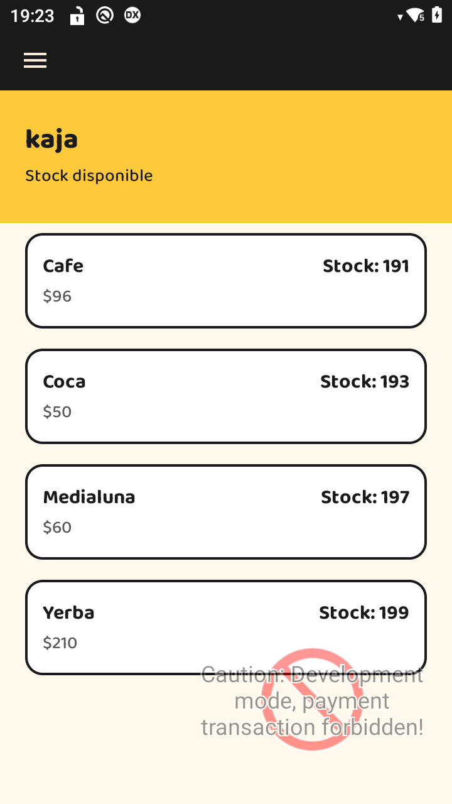

Manual del cajero (app kaja en la terminal)
kaja es la app de la terminal de cobro. Con ella el cajero abre y cierra la caja, vende (en efectivo o con tarjeta), anula, devuelve, consulta el stock y vende o controla entradas de eventos.
- Configurar la terminal (una sola vez, la hace el administrador o el técnico)
- Ingresar
- El menú
- Abrir la caja
- Vender
- Cerrar la caja
- Anular una venta
- Devolución
- Stock
- Eventos
- Configuración
Configurar la terminal
Una terminal nueva hay que conectarla con kaja-bo escaneando el QR que el superadmin entregó al crear el comercio. La dirección de kaja-bo y la clave del comercio no se escriben a mano: solo se cargan con el QR.
- En la pantalla de ingreso tocá el engranaje (arriba a la derecha) para abrir la Configuración.
- Escribí el Número de terminal (el que asigna Fiserv/ITD a esa terminal).
- Elegí cómo se cobra con tarjeta: App2App (la app de pagos de la misma terminal) o Fpinpad (un pinpad externo, con su IP). Si no sabés cuál, consultá con el técnico.
- Tocá Escanear QR de kaja-bo y apuntá la cámara al QR. Al leerlo, la pantalla dice "kaja-bo configurado". Si dice "QR no reconocido", ese no es el QR de configuración de kaja-bo.
- Tocá Guardar.
- Tocá Reportar terminal a kaja-bo: la terminal aparece en kaja-bo y baja el catálogo, el tema y los datos del comercio. Después el administrador la asigna a su sucursal.

Si se escanea el QR de otro comercio, la terminal borra el catálogo del comercio anterior y baja el del nuevo.
Ingresar

Ingresá con tu Usuario y Contraseña y tocá Ingresar.
- Primer ingreso: te pide verificar tu correo. Te llega un código de 8 dígitos por mail; ingresalo para entrar.
- ¿No tenés usuario? Pedilo: completá tu nombre, usuario, correo y contraseña, y verificá el correo con el código. Tu usuario queda pendiente hasta que el administrador lo apruebe; la pantalla te ofrece avisarle por WhatsApp o por mail.
- ¿Olvidaste tu contraseña?: escribí el correo con el que verificaste tu usuario y te llega un link para elegir una contraseña nueva. El link vence en 30 minutos y sirve una sola vez.
La sesión dura 8 horas. Diez minutos antes de que termine aparece el aviso "Tu sesión se cierra en 10 minutos": tocá Continuar para seguir 2 horas más.
El menú
Tocá las tres rayas (arriba a la izquierda) para abrir el menú:

- Operación: Venta, Anular, Devolución y Abrir/Cerrar caja.
- Catálogo: Stock.
- Eventos: venta y control de entradas.
- Ajustes: Configuración.
Abrir la caja
Sin una caja abierta no se puede cobrar ni vender entradas. La pantalla de Venta lo avisa con "Abrí la caja para empezar a vender":

- Tocá Ir a Caja (o, en el menú, Abrir caja).
- Escribí el Monto inicial: el efectivo con el que arranca la caja.
- Tocá Abrir caja.

Vender
En la pantalla de Venta (con la caja abierta):
- Agregá productos:
- con el botón + (Agregar producto) los buscás por nombre o código;
- con el botón Escanear producto leés el código de barras.
- En cada producto usá + / − para cambiar la cantidad o la X para quitarlo. Si un producto tiene una promoción vigente (por ejemplo 3x2), aparece la etiqueta Promo y el descuento ya está en el TOTAL.
- Tocá Cobrar y elegí ¿Cómo paga?:
- Efectivo: escribí el Monto abonado; la terminal muestra el Vuelto. Tocá Confirmar (se habilita cuando el monto alcanza).
- Tarjeta: la venta pasa a la app de pagos (o al pinpad). Seguí las instrucciones de la pantalla de pago y pasá la tarjeta.
- Mientras se procesa, la pantalla muestra en qué paso está ("Registrando venta en el servidor…", "Enviando venta al aplicativo de pago…", "Emitiendo comprobante fiscal…").
- Si la venta se aprueba, se imprime el ticket con el comprobante fiscal (CFE). Con Enviar CFE por correo se lo mandás al cliente por mail. Tocá Listo para empezar otra venta.
Si algo sale mal:
- Rechazado: la tarjeta fue rechazada. Podés Reintentar o cobrar de otra forma.
- "No reintentes el cobro: el resultado se va a resolver solo.": el procesador todavía no contestó. No vuelvas a cobrar: la venta se resuelve sola en unos minutos y queda registrada.
- Comprobante fiscal pendiente: la venta se cobró pero el CFE no se pudo emitir en ese momento. Se reintenta solo; también podés tocar Reintentar CFE.
El ícono de la impresora (arriba a la derecha en Venta) imprime un ticket de prueba.
Cerrar la caja
- En el menú tocá Cerrar caja.
- Contá el efectivo y escribilo en Monto contado.
- Tocá Cerrar caja.
Al cerrar la caja también se hace el cierre de lote de las tarjetas. kaja-bo compara lo contado con lo esperado y el administrador ve la diferencia.
Anular una venta
Se anulan ventas con tarjeta del lote actual (las de la caja abierta). Para ventas de días anteriores usá Devolución.
- En el menú tocá Anular.
- Escribí el Número de ticket (4 dígitos, está en el ticket impreso) y tocá Anular.
- Pasá la misma tarjeta por la terminal cuando lo pida.

Igual que en la venta: si dice "No reintentes", esperá; el resultado se resuelve solo.
Devolución
Se devuelven ventas con tarjeta de un lote ya cerrado (días anteriores), en forma total o parcial. Se emite una nota de crédito y, si se devuelve todo, se repone el stock.
- En el menú tocá Devolución.
- Escribí el Número de ticket y tocá Buscar. Si ese número se repite entre días, elegí la venta correcta de la lista.
- Escribí el monto a devolver (todo o una parte) y tocá Devolver.
- Pasá la misma tarjeta cuando lo pida.
- Al terminar podés Imprimir el comprobante.

Stock
En el menú tocá Stock para ver los productos del local con su precio y las unidades disponibles. Es solo de consulta: el stock lo carga el administrador en kaja-bo y se descuenta solo con cada venta.

Eventos
En el menú tocá Eventos.

- Escanear entrada (control en la puerta): tocá Elegir evento a controlar, elegí el evento y tocá Escanear para leer el QR de cada entrada. La pantalla dice Entrada válida o Entrada no válida, con el motivo (por ejemplo, que ya se usó).
- Vender entradas: elegí el evento, la Cantidad, el Mail del comprador (le llegan las entradas con su QR) y, si querés, el nombre. Elegí Efectivo o Tarjeta y tocá Vender. Necesita la caja abierta.
Configuración
En el menú tocá Configuración.

- Tema oscuro: cambia los colores de la app.
- Número de terminal, Fpinpad y App2App: ver Configurar la terminal.
- kaja-bo configurado / sin configurar: indica si la terminal ya tiene cargado el QR del comercio.
- Escanear QR de kaja-bo: para conectar la terminal con su comercio (o cambiarla de comercio).
- Reportar terminal a kaja-bo: fuerza la sincronización (catálogo, stock, tema, promociones). Sin tocarlo, la terminal sincroniza sola cada 15 minutos.
- Cajero y Cerrar sesión: muestra quién está ingresado y permite salir.
- Guardar: guarda los cambios. Si salís con cambios sin guardar, la app te pregunta qué hacer.